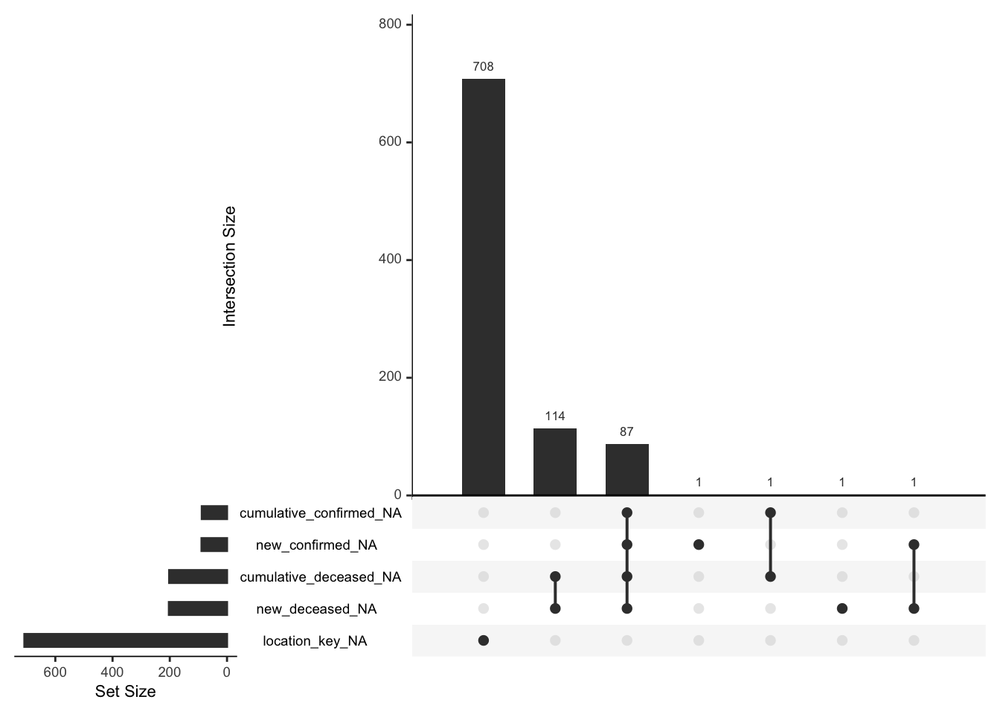
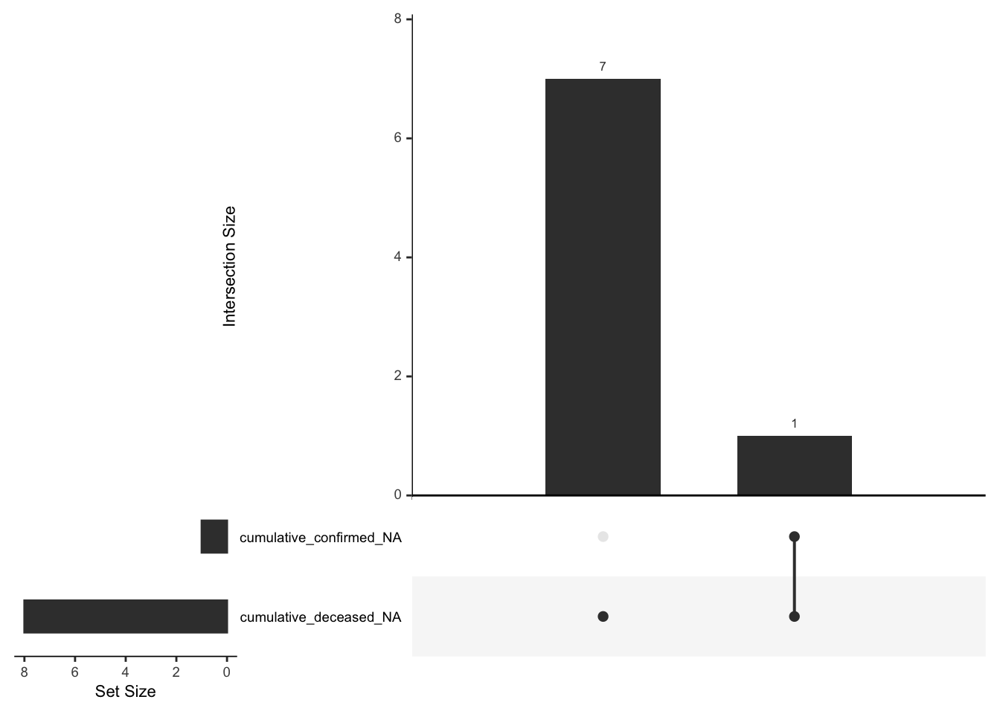

Chapter 4 Missing values
As the epidemiology table is our main focus, we perform a missing value analysis on both the country-level and state-level of this table.
4.1 Country-level Epidemiology Table
Among the 163609 rows and 6 columns of the data, a total of 1290 values were missed in 5 columns which are location_key, new_deceased, cumulative_deceased, new_confirmed, cumulative_confirmed.
| column | count |
|---|---|
| location_key | 708 |
| new_deceased | 203 |
| cumulative_deceased | 202 |
| new_confirmed | 89 |
| cumulative_confirmed | 88 |
From the missing pattern visualization, we notice that there are a total of 7 missing patterns (excluding complete cases) from over 160000 rows of data with 6 features. The plot in the middle shows all the missing patterns. The plot on the top shows the corresponding frequencies of each patterns while the plot on the right shows the corresponding frequencies of each variables. The majority (~80%) of the missing patterns lacks data in the location_key column, which makes these data invalid as location_key is the main id of our data. Without location_key, we are not able to know where the data is being recorded, and thus the data will be useless in our analysis. The rest of the missing patterns has very minimal occurrences and could be discarded for now in the analysis.

4.2 State-level Epidemiology Table
Different from the country-level table, the state-level table is very clean. Among the 38537 rows and 6 columns of the data, a total of 9 values were missed in 2 columns which are cumulative_deceased, cumulative_confirmed. It is possible that the US government has put a great effort on keeping track of the epidemiology statistics. Moreover, as the missing values are all cumulative counts, we can infer these values from the counts of new cases.
| column | count |
|---|---|
| cumulative_deceased | 8 |
| cumulative_confirmed | 1 |
